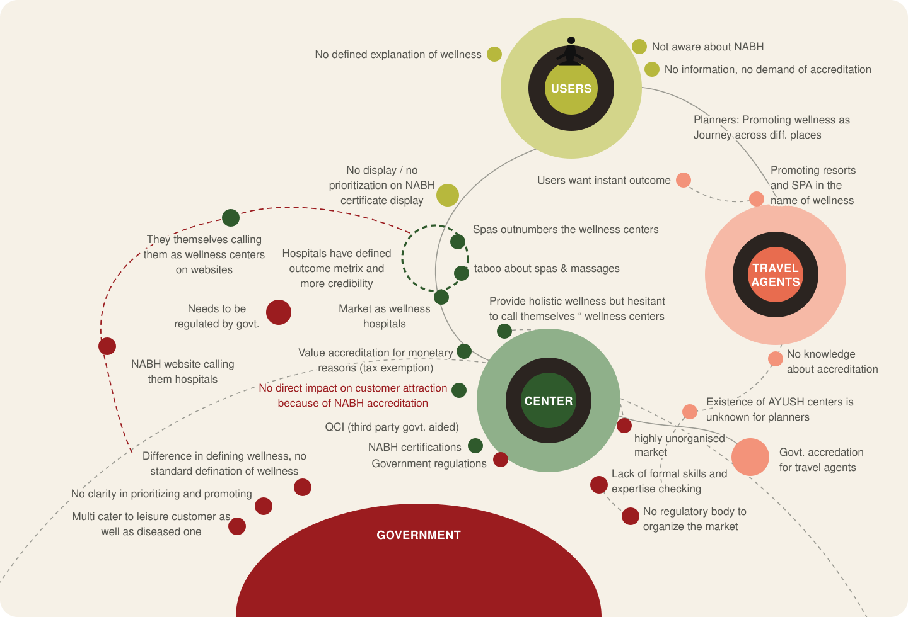
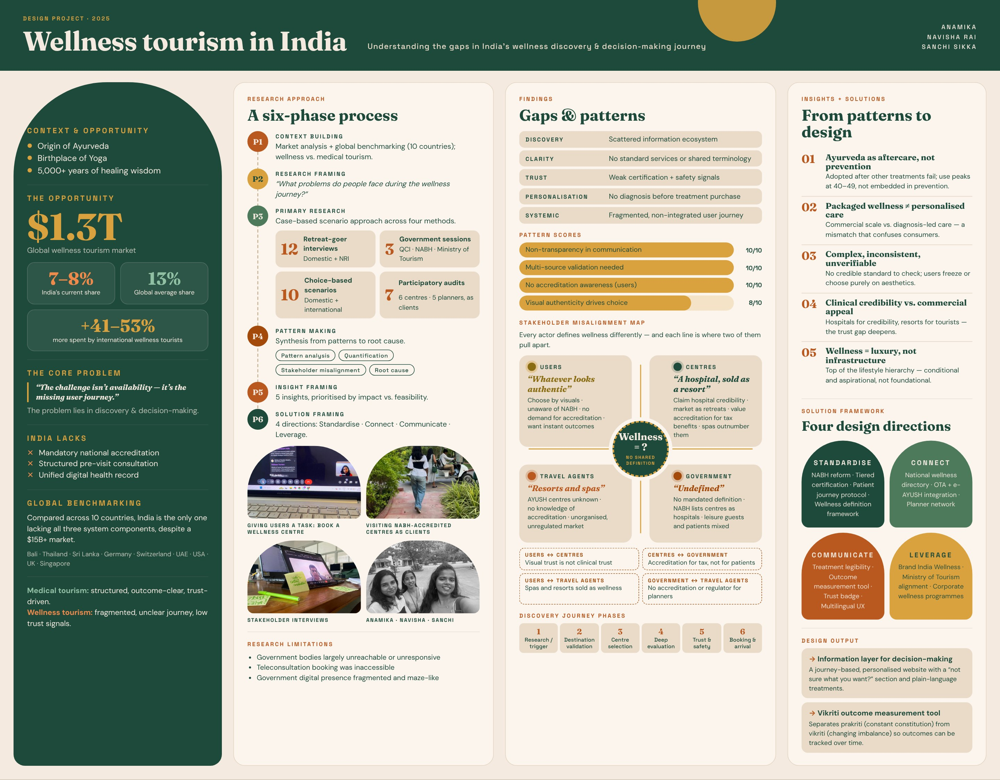

Where we started
India has over 5,000 years of healing knowledge and a wellness market above $15 billion. So why is its share so small?
We compared wellness tourism with medical tourism, where a structured, trust-driven process makes the journey clear. Then we benchmarked India against ten countries, including Bali, Thailand, Sri Lanka, Germany and Singapore.
India was the only one lacking all three system components: a mandatory national accreditation, a structured pre-visit health consultation, and a unified digital health record for international users. The offering is strong. The system around the user is fragmented.
Six phases, from context to solution
Our guiding question: what problems do people face during the wellness journey?
- 1
Context building
Market analysis and global benchmarking across 10 countries.
- 2
Research framing
Defined the core question and compared the wellness ecosystem with medical tourism.
- 3
Primary research
A case-based scenario approach using four methods.
- 4
Pattern making
Pattern analysis, quantification, a stakeholder misalignment map and root cause analysis.
- 5
Insight framing
Five insights, prioritised by impact against feasibility.
- 6
Solution framing
Four design directions backed by a wellness framework.
Primary research
We heard from users, government bodies and providers, and we became clients ourselves.
Retreat-goer interviews
Domestic and NRI participants.
Government sessions
QCI, NABH and the Ministry of Tourism.
Choice-based scenarios
Domestic and international audiences deciding between centres.
Participatory audits
We visited centres and spas, and enquired with trip planners, as clients.
Five gaps in the system
Mapped from research to booking, the problem sits in discovery and decision-making.
How strongly each pattern showed up
Each actor defines wellness differently. Users choose by visuals and don’t know NABH exists. Centres call themselves hospitals for credibility but market as resorts. Government has no mandated definition. Travel agents sell resorts and spas as wellness.


Five insights
Ayurveda is aftercare, not prevention
It is adopted after other treatments fail, and use peaks in the 40–49 age group instead of being part of daily prevention.
Packaged wellness is not personalised care
Traditional systems start with diagnosis. Commercial offerings are fixed packages built for scale. The mismatch confuses consumers.
Information is complex, inconsistent and unverifiable
With no credible standard to check, users either freeze or choose purely on aesthetics.
Centres are stuck between clinical credibility and commercial appeal
They call themselves hospitals to earn trust and market as resorts to attract tourists, which deepens the trust gap.
Wellness is treated as luxury, not infrastructure
It sits at the top of the Indian lifestyle hierarchy, conditional and aspirational. Oral, lineage-based knowledge also leaves outcomes undocumented.
Four design directions
Standardise
- NABH reform
- Tiered certification
- Patient journey protocol
- Wellness definition framework
Connect
- National wellness directory
- OTA and e-AYUSH integration
- Planner network
Communicate
- Treatment legibility
- Outcome measurement tool
- Trust badge
- Multilingual UX
Leverage
- Brand India Wellness
- Ministry of Tourism alignment
- Corporate wellness programmes
Information layer for decisions
A journey-based, personalised website prototype. A “not sure what you want?” section matches concerns to treatments, and each treatment is explained in plain language.
Outcome measurement tool
Ayurvedic questionnaires are clinically meaningful but inconsistent. We separated prakriti, a person’s innate constitution, from vikriti, their current imbalance, so patients can track vikriti over time and see real outcome evidence.
What limited the research
- Government bodies were largely unreachable or unresponsive.
- Booking a teleconsultation through the centres’ own channels was not possible.
- Government digital presence was fragmented and hard to navigate.
See the thinking behind it
The Miro board holds our maps, synthesis and working notes.
Wellness poster
The whole project on one page: context, our six-phase process, the gaps we found, how each stakeholder defines wellness differently, and the four design directions.
